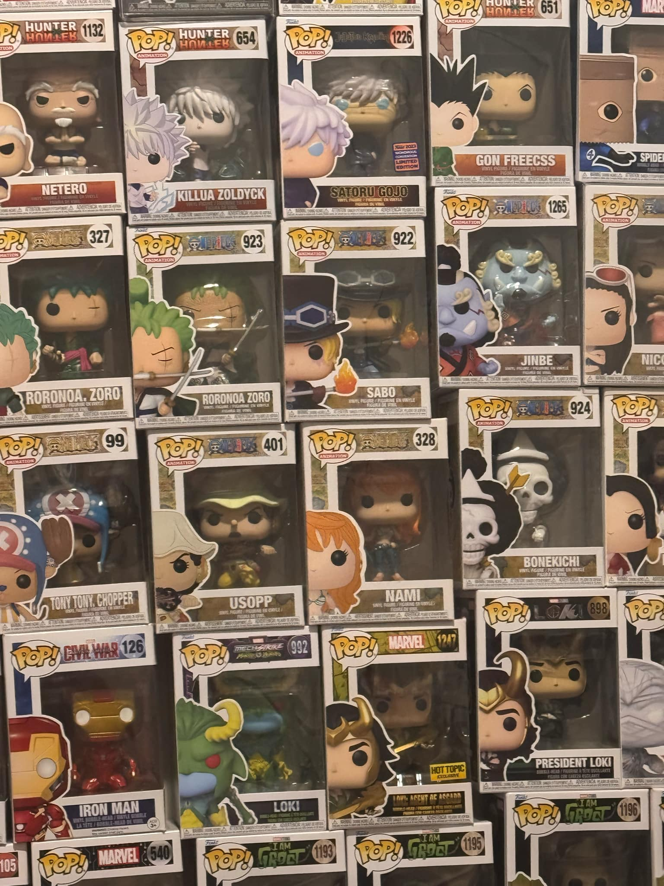
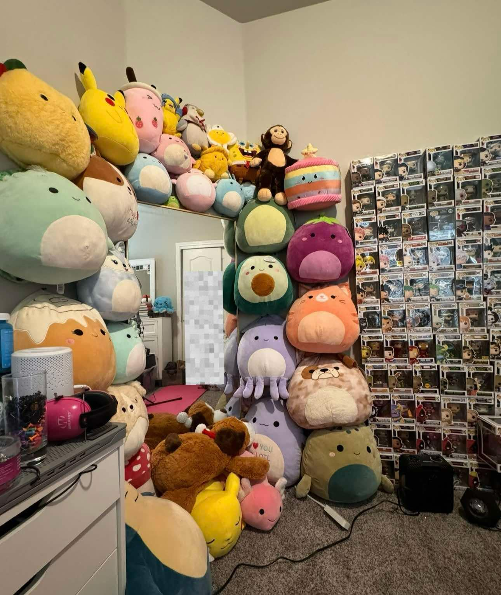
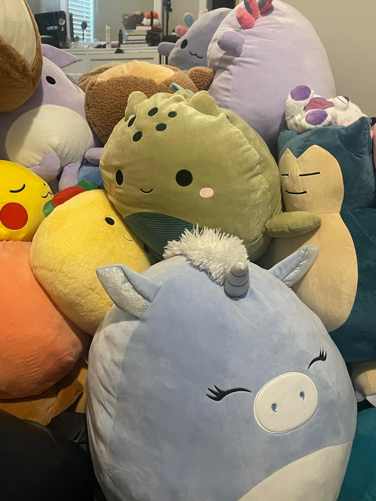
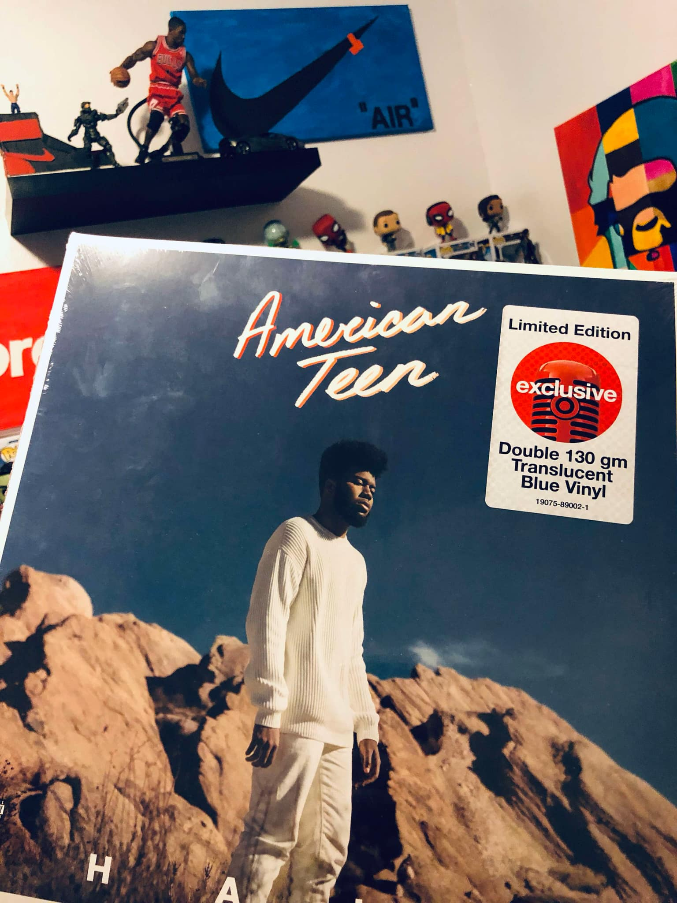
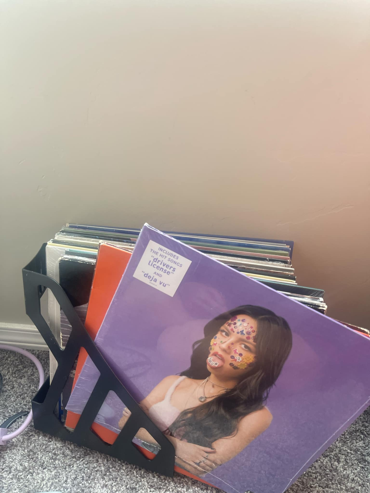

Funko Pops, Stuffed Toys, and Vinyl Records





Collecting Funko Pops
Collecting Funko Pops has evolved into one of my most cherished hobbies because it allows me to showcase my love for various fandoms in a fun and unique way. Each Funko Pop figure represents a character from a show, movie, or video game that has impacted my life in some way. The excitement of finding a new Pop, whether it’s a rare limited edition or a character I’ve always wanted, brings a sense of satisfaction and joy. Not only do these figures add a personal touch to my space, but they also serve as conversation starters with fellow fans. Each addition to my collection feels like a tribute to the characters I admire, and every new figure tells a different story that I get to share with others.
Collecting Squishmallows
Collecting Squishmallows has become a hobby that combines the joy of collecting with the comfort of plush toys. These adorable, soft, and squishy characters bring a sense of warmth and joy whenever I look at them. From the colorful animals to the holiday-themed editions, each Squishmallow holds a special place in my collection. They not only bring a sense of nostalgia for childhood stuffed animals but also represent a sense of coziness and comfort that is perfect for display or for cuddling on a lazy day. I love how each new Squishmallow has a unique personality, and the thrill of hunting for new releases or limited-edition designs makes it an ongoing, exciting hobby. It's a simple yet delightful hobby that reminds me to appreciate the little things in life.
Collecting Vinyl Records
Collecting vinyl records has transformed into a deeply meaningful hobby that connects me to music in a way that digital formats can’t. There’s a distinct joy in searching for vintage albums, discovering hidden gems, and building a personal music library that spans genres and decades. Each vinyl record represents not just an album, but a piece of musical history, and listening to it on a record player brings a warmth and depth to the music that’s hard to replicate. The ritual of flipping through records, carefully setting the needle on the groove, and the soft crackle that precedes the music creates an experience that digital music can't offer. Beyond the sound, vinyl offers the tactile pleasure of holding the album cover and the visual appeal of beautifully designed artwork. For me, collecting vinyl records is a way to slow down and enjoy music in its fullest form, making it more than just a hobby—it’s a sensory experience that I treasure.